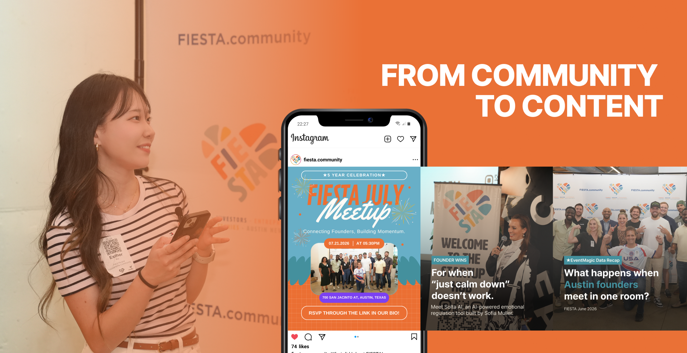
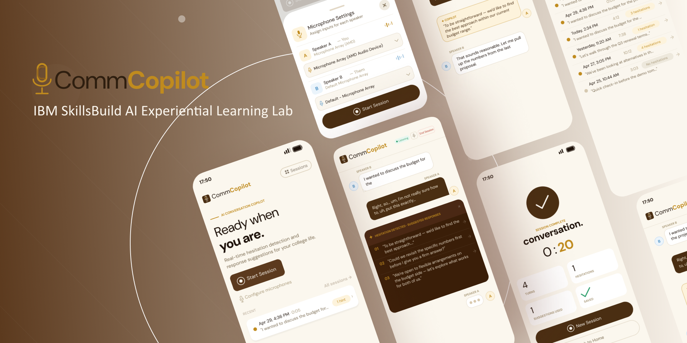
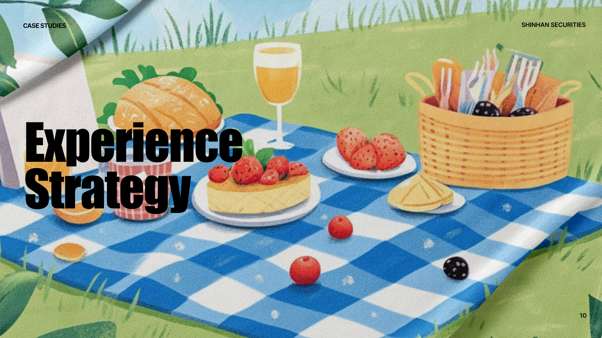
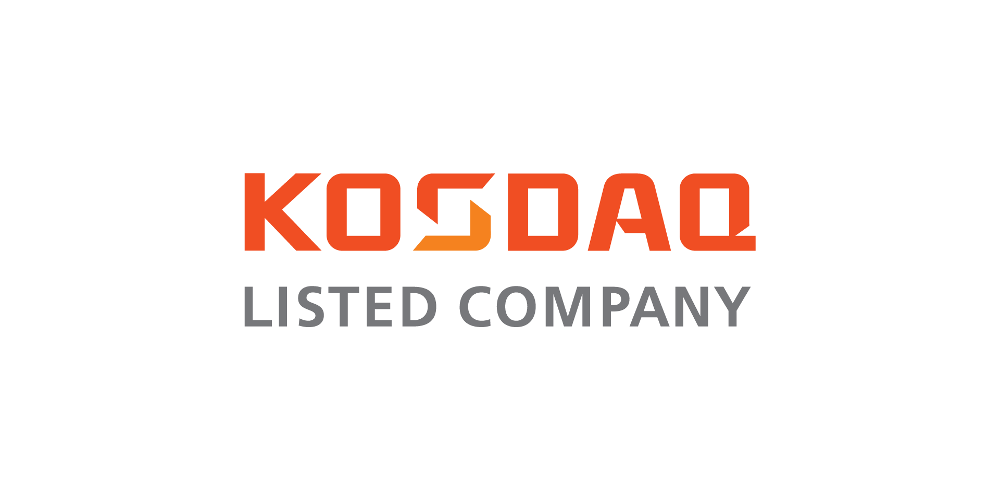
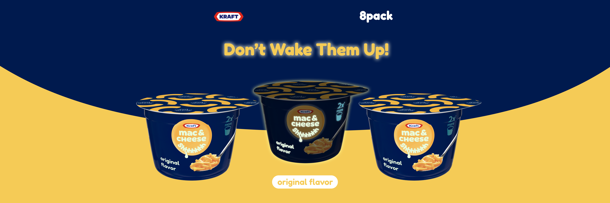

FIESTA Social Media Growth
End-to-end Instagram strategy, content production, event coverage, and performance optimization for Austin's founder community.
+229% Reach · +172% Interactions · +103% Views

FoundHERs Brand Launch
Built a social media presence for a women founder community from the ground up — visual identity, brand voice, and content system.
2.3K Views · 654 Accounts Reached in Month One

CommCopilot
Designed an AI conversation copilot based on user research with international students.

Shinhan Securities Gen Z Campaign
Translated financial and compliance-heavy topics into approachable digital content for a Gen Z audience.

KOSDAQ Editorial Workflow
Developed content and editorial workflows for KOSDAQ-listed companies, managing structured publishing across multiple brands.

Additional Creative Work
A creative archive of live music promotion, experience strategy, editorial web design, and visual storytelling concepts.